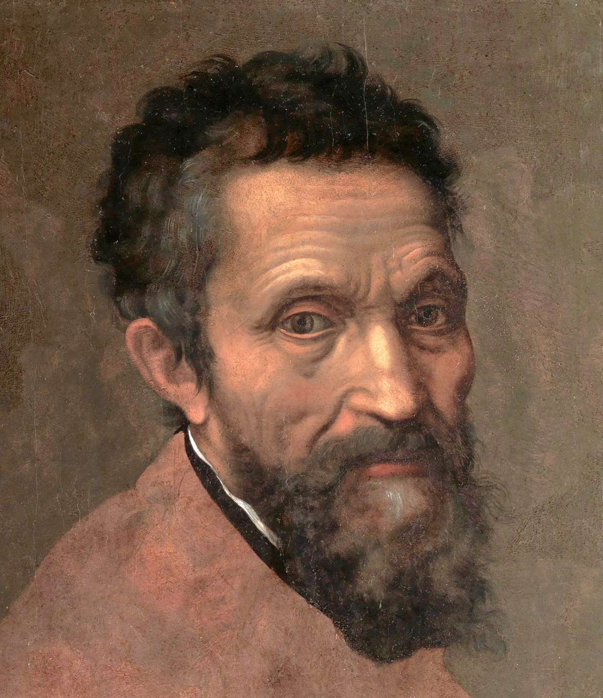

Leonardo da Vinci was a painter, engineer, architect, inventor, and student of all things scientific. His natural genius crossed so many disciplines that he epitomized the term “Renaissance man.” Today he remains best known for two of his paintings, "Mona Lisa" and "The Last Supper." Largely self-educated, he filled dozens of secret notebooks with inventions, observations and theories about pursuits from aeronautics to human anatomy. His combination of intellect and imagination allowed him to create, at least on paper, such inventions as the bicycle, the helicopter and an airplane based on the physiology and flying ability of a bat.

According to Machiavelli, the ends always justify the means—no matter how cruel, calculating or immoral those means might be. Tony Soprano and Shakespeare’s Macbeth may be well-known Machiavellian characters, but the man whose name inspired the term, Niccolo Machiavelli, didn’t operate by his own cynical rule book. Rather, when Machiavelli wrote The Prince, his shrewd guidelines to power in the 16th century, he was an exiled statesman angling for a post in the Florentine government. It was his hope that a strong sovereign, as outlined in his writing, could return Florence to its former glory. Machiavelli’s guide to power was revolutionary in that it described how powerful people succeeded—as he saw it—rather than as one imagined a leader should operate. Before his exile, Machiavelli had navigated the volatile political environment of 16th-century Italy as a statesman. There were constant power struggles at the time between the city-states of Italy, the Holy Roman Empire, France and Spain.

Michelangelo was a sculptor, painter and architect widely considered to be one of the greatest artists of the Renaissance—and arguably of all time. His work demonstrated a blend of psychological insight, physical realism and intensity never before seen. His contemporaries recognized his extraordinary talent, and Michelangelo received commissions from some of the most wealthy and powerful men of his day, including popes and others affiliated with the Catholic Church. His resulting work, most notably his Pietà and David sculptures and his Sistine Chapel paintings, has been carefully tended and preserved, ensuring that future generations would be able to view and appreciate Michelangelo’s genius.